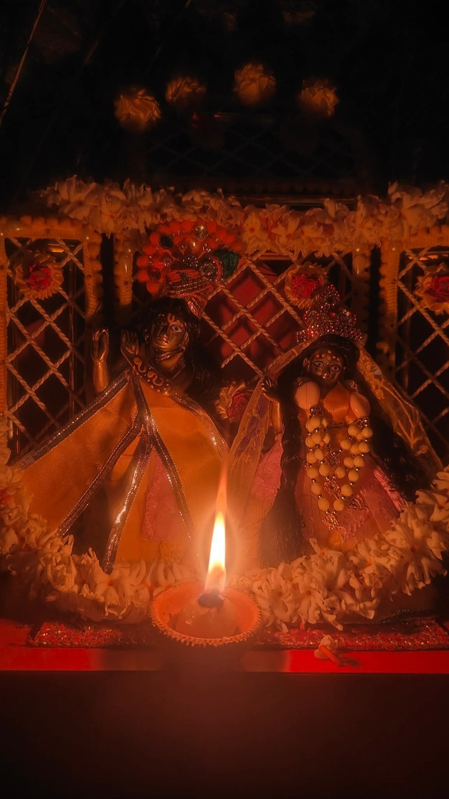
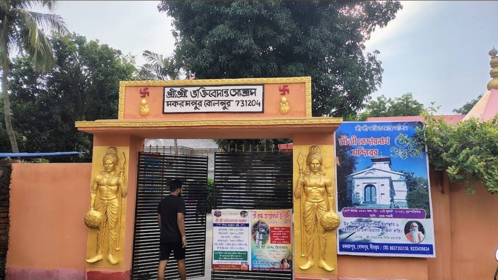
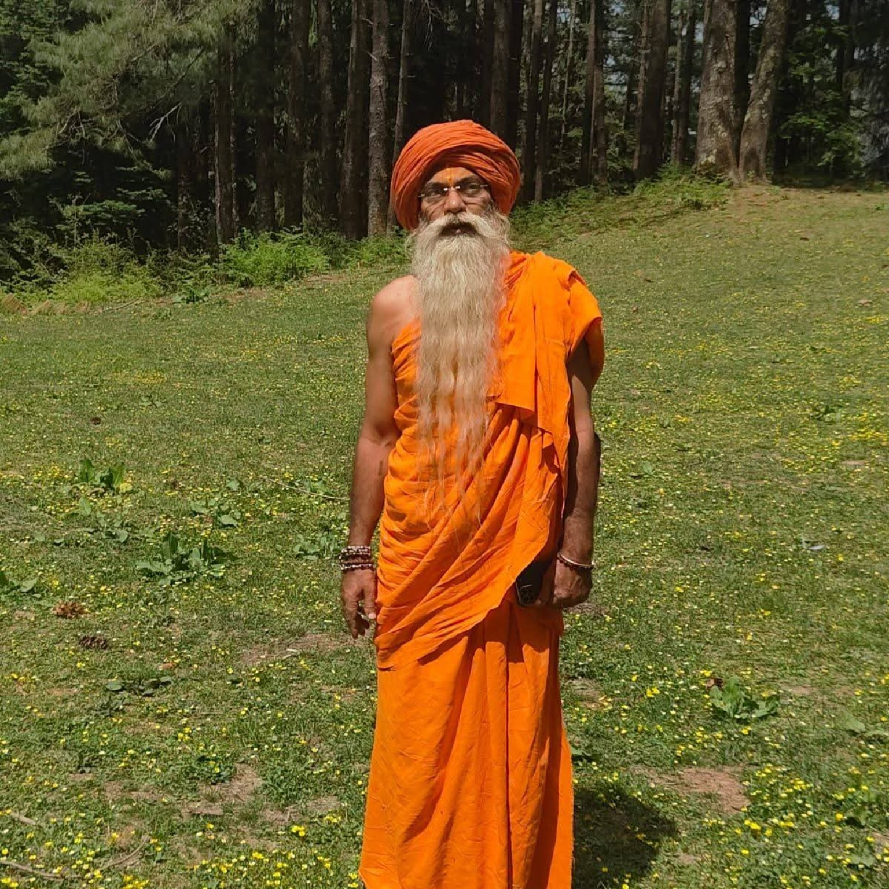
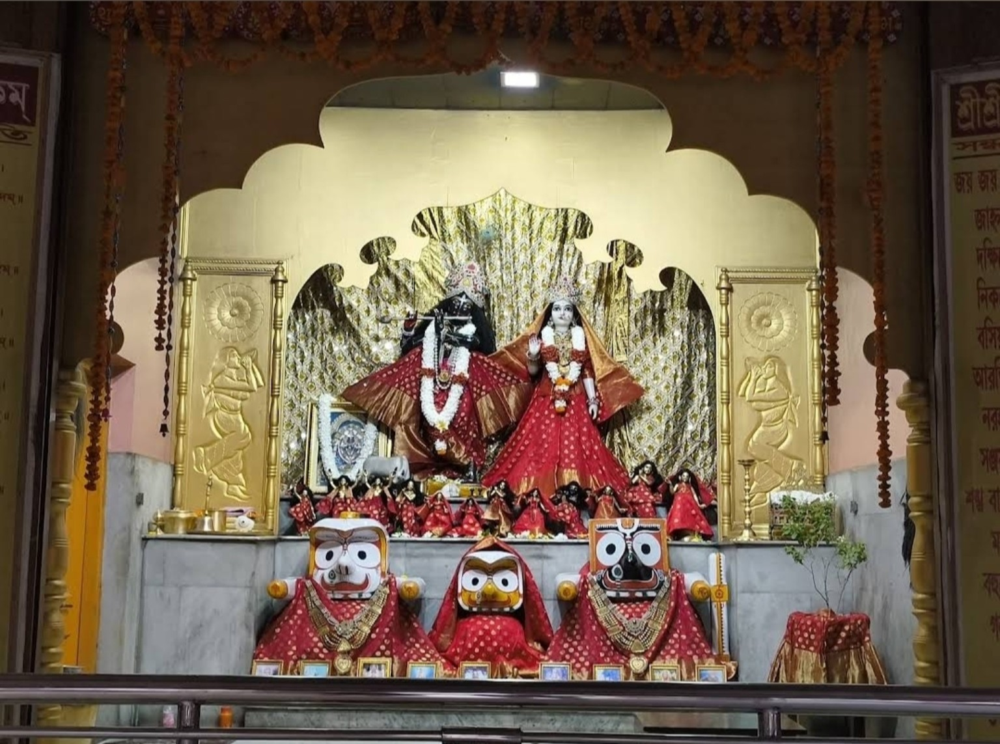
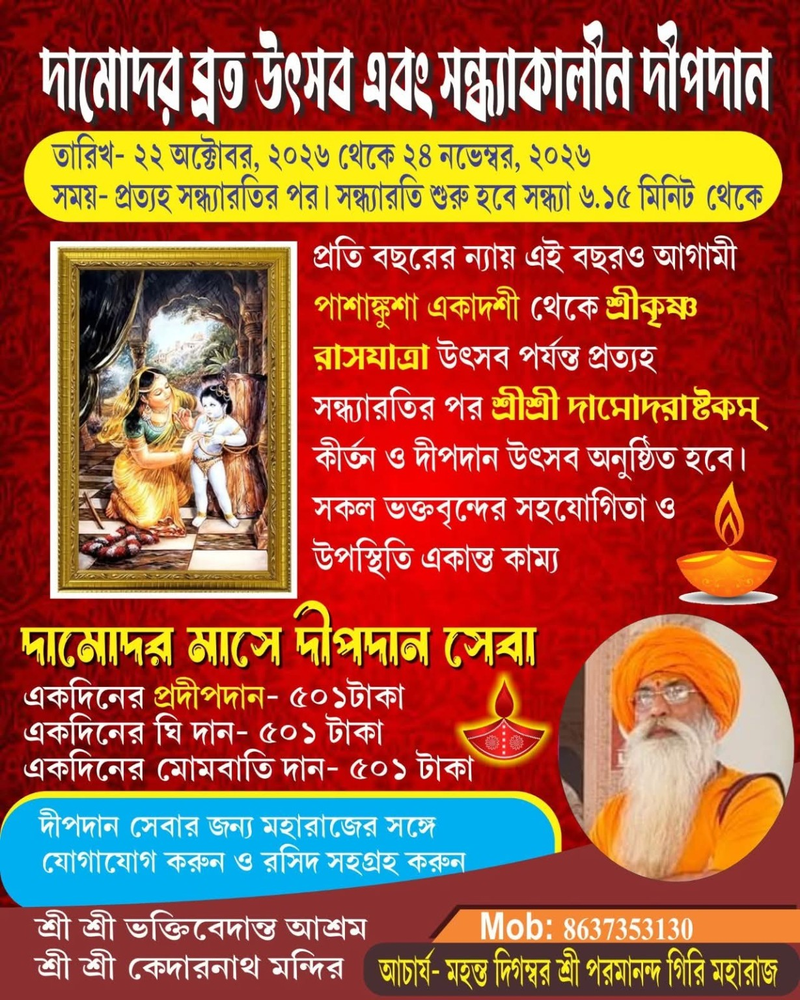
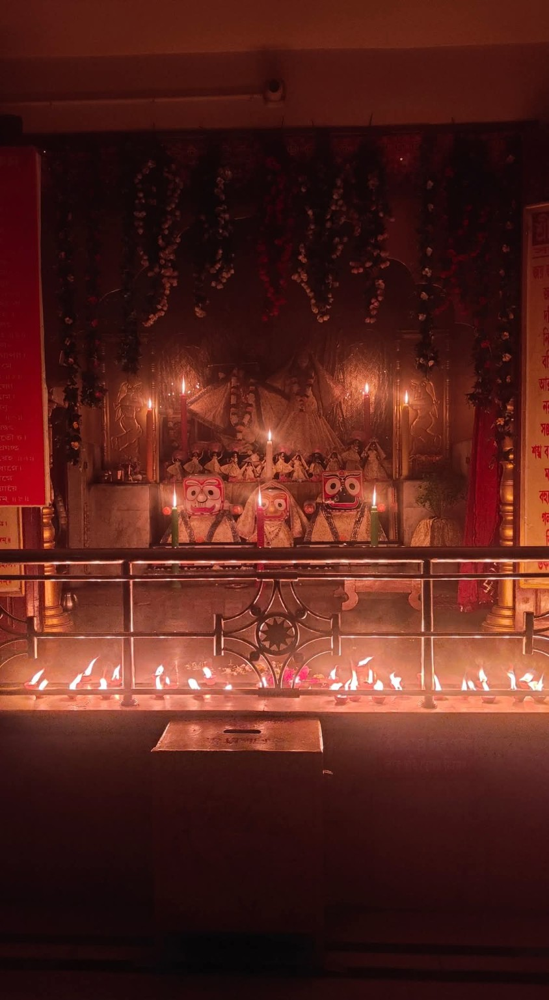

Daily Aarti
Daily worship and aarti as per the temple schedule.
A place for devotion and peace
Welcome to our temple and ashram at Makrampur, Bolpur.
Know our temple

Sri Sri Kedarnath Mandir is part of Sri Sri Bhaktivedanta Ashram, located at Makrampur, Bolpur, West Bengal. The temple was established in 2006.
Temple history, vision and mission details can be added after confirmation from the ashram.
Spiritual guidance

Maharaj Profile
This section is dedicated to the spiritual guide of the ashram.
Visit and worship

Timings transcribed from the schedule board supplied by the temple. Please confirm on special days.
During the Damodara Deepdaan Utsav (22 October–24 November 2026), the festival poster says evening aarti starts at 6:15 PM. The regular notice lists 6:30–7:40 PM. Please confirm the day's timing with the temple.
The notice does not specify separate public darshan opening hours. Please call +91 86373 53130 before visiting to confirm darshan availability.
Call the temple: +91 86373 53130 → View original schedule notice ↗Celebrate together

22 October – 24 November 2026
Daily after Sandhya Aarti: Sri Sri Damodarashtakam Kirtan and Deepdaan. During this festival period, the poster announces evening aarti from 6:15 PM.
All devotees are invited to participate and support the celebration.
View Festival Poster ↗
Daily worship and aarti as per the temple schedule.
Special decorations and devotional observances.

Join the Damodara month devotional programme.
Moments of devotion
Serve with devotion
The temple poster lists the following seva contributions:
For Deepdaan seva, contact Maharaj and collect a receipt. Please verify the UPI recipient name in your payment app before confirming any payment.
Contact Maharaj / AshramQR payload was decoded from the QR printed on the temple's supplied notice. Please confirm the UPI details with the ashram before making a contribution.
We welcome your visit